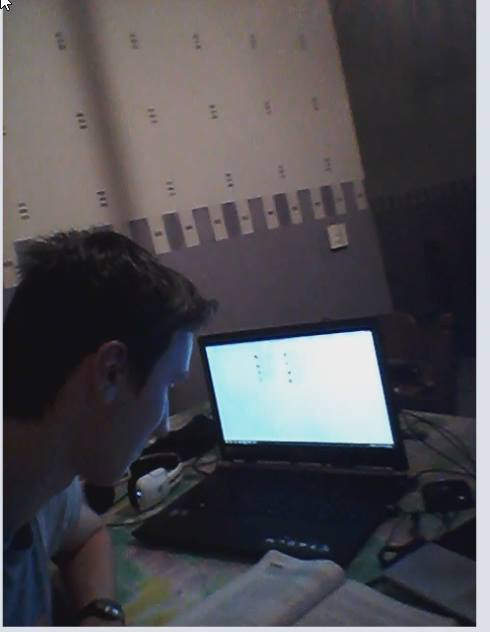

IT-autobiography
Thu, Oct 15, 2015How IT became a part of my life
My name is Bert Gysen. I’m a 17-year old programming champion who does IT management at the Immaculata Institute. I have loved programming ever since I first got in touch with it and I’m going to tell you how IT has become a part of my everyday life.
My first experience with IT occurred when I was 6 years old. I was playing at a friend’s house when he decided to play a game on his computer. I was fascinated by all that he could do. He was jumping and fighting enemies. I had never seen something like that. In those days I just watched television all the time. My aunt had a computer as well so I loved to visit her. I didn’t even have a computer back then, so a few months later I got one too, back then I always went to funnygames.com or spele.nl to play games. In my fourth year of high school I hadn’t planned to do IT management but when we started basic programming I immediately knew I wanted to do this.
Nowadays my computer is part of my everyday life. When I come home the first thing I do is turn on my computer and check Facebook. I’m on my computer all the time, easily 5 hours a day. Sometimes when I’m bored I start programming something new. I love the creative aspect of programming and what you can do with it. I’m not amazing at making my programs look good but they work and that’s what counts. I’ve already made a Blackjack game, a drinking game and Wout, Joeri and me also made a game last year where you had to click all the buttons in time to win . I don’t see myself as an expert, rather someone who loves programming and is eager to learn more.
If I manage to graduate college the next few years and get a job in IT I would be very happy. Networking is not really my thing because I can’t be as creative with it as I can be with programming, so I prefer a job where I can sit down and program all day. Some people think that’s is boring but I don’t see it that way. I get great satisfaction when I try to make something work and it finally does.
I can’t even imagine what I would do if I didn’t have my computer. I use it for school, talking to friends, looking things up, playing videogames and much more. I can say IT has become an important part of my life because I just can’t live without it. It’s an ever-growing, fascinating world that I want to keep exploring!
